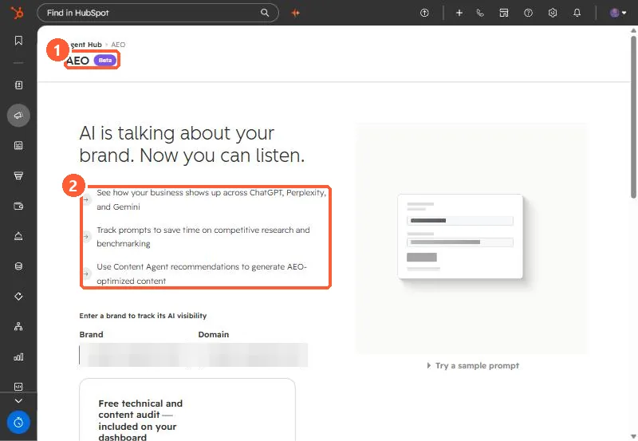

Short answer
HubSpot AEO tracks prompts, the questions buyers ask answer engines, and shows whether your brand appears and which competitors and sources are cited. HubSpot's KB lists Marketing Hub Professional or Enterprise or HubSpot AEO, with prompt limits by plan. Our agency's portal showed 25 of 25 prompts used on Professional. Recommendations come in Site audit, Owned content, Social amplification and Outreach types. Triage outreach before you email anyone: one of our five was a directory profile we control, and all five listicles were tagged affiliate.
1. What it tracks
HubSpot's KB says AEO uses prompts to determine whether your brand appears, and which competitors are mentioned, in answer engine responses. Prompts are generated from your HubSpot data, audience and offerings, and you can add your own. Each prompt gets one buyer journey phase. The dashboard shows total prompts, average visibility, responses and citations. Find it under Marketing > AEO.


2. Prompt limits
Limits vary by subscription. Our agency's Marketing Hub Professional portal showed 25 of 25 prompts in use. Choose prompts a buyer would actually type, not only your brand name.
3. Recommendation types
- Site audit: content and technical issues on your pages.
- Owned content: create or update pages on your own site.
- Social amplification: Reddit threads, LinkedIn or YouTube content based on citation trends.
- Outreach: third-party publishers to contact about being included.
Each one can be marked in progress or dismissed, and assigned.
4. Triage outreach before sending anything
Our portal listed five outreach targets. What checking each one turned up:
- One was not outreach. It was HubSpot's own partner directory filtered to our state. The fix was our directory profile: locations, services, industries, and profile copy naming the city and state.
- All five were tagged affiliate. Listicles that make money from placement may answer with a price. Decide whether you will pay before you email.
- Check fit. One list ranked enterprise agencies. We pitched their mid-market list instead.
- Look for the real way in. One site had a contribution request page, another only a general marketing inbox.